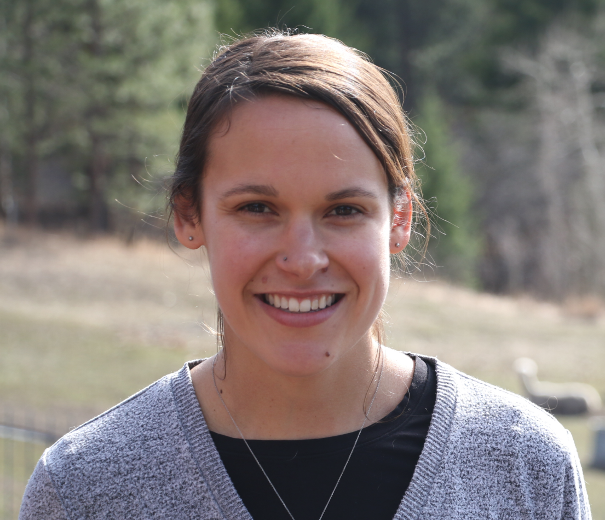

I am a computational linguist and AI interpretability researcher interested in understanding large language model behavior through a geometric lens. I recently completed my PhD at the University of Montana, where my dissertation, Searching for Nooks and Crannies, examined the relationship between latent space geometry, weight distributions, and downstream model performance in encoder-only models, and the mechanisms of safety alignment in decoder-only MoE models. I am a Professor of Practice in Applied AI at the University of San Diego.
My path to AI research was unconventional: I started in linguistics, spent six years in veterinary medicine, and came to machine learning through a business analytics program and a role at a Missoula tech startup. I now live on a family farm outside Missoula, where I raise alpacas and children in roughly equal measure.
My current research interests center on a theory I call "nooks and crannies", which describes a hypothesized recursive organizational structure in the high-dimensional latent spaces of language models that may be beneficial for model function. This idea threads through my dissertation work, connecting experiments on geometric distributional characteristics, model weight distributions, and safety alignment mechanisms.
My research is organized around a central question: what can the internal structure of transformer language models tell us about how and why they behave the way they do? I approach this question primarily through geometric analysis of model internals, treating internal representations and weights as distributions in high-dimensional space and asking what their shape, spread, and organization reveal about model function and behavior.
A guiding intuition behind this work is what I call "nooks and crannies": the idea that a model's high-dimensional latent space contains a complex, recursively clustered organizational structure, almost fractal in nature, that is beneficial for downstream model function. This theory threads through the projects described below, each of which probes a different facet of how internal organization relates to model behavior.
Working with high-dimensional distributions requires reliable measurement tools, and our intuitions about shape and spread break down above a handful of dimensions. Much of my early work focused on this foundational challenge: how do we quantify properties like spread and clustering in spaces where we can't visualize the data?
I found that widely-used measures of distributional spread in NLP (Average Cosine Similarity and I(V)) are unreliable as relative measures, failing to produce expected rankings on synthetic distributions with known properties. I introduced two alternatives, Eigenvalue Early Enrichment (EEE) and Vasicek Ratio MSE (VRM), drawing on methods from astronomy, ecology, and spatial statistics. This work underscored a broader challenge: the tools we use to describe high-dimensional geometry shape the conclusions we draw from it, and many commonly used tools are not up to the task.
An open question that continues to motivate my work is whether there exists a measure (or family of measures) that can capture the kind of complex, recursive structure described by my nooks-and-crannies hypothesis. Existing measures of spread and clustering capture aspects of this structure, but none fully characterize it. I believe that recent work on feature neighborhoods and geometric structure in the mechanistic interpretability community may offer promising directions.
If the geometric organization of a model's latent space matters for downstream function, we should be able to find measurable properties that predict performance. To test this, I applied a range of geometric measures, including the spread measures above and several quantization-based clustering measures, to the latent spaces of BERT-family models with varying degrees of weight perturbation.
I found that quantized cell density (Point Patchiness), a measure of variability in cluster distributions borrowed from ecology, predicts GLUE benchmark performance with r = 0.9 across perturbed BERT-small models. This suggests that the fine-grained patchwork structure of contextual representations is meaningfully related to a model's ability to learn downstream tasks, supporting the nooks-and-crannies intuition that organizational structure, independent of specific content, benefits transfer learning.
This work also revealed that adding noise to model weights does not smoothly degrade latent space geometry. Many geometric measures showed non-monotonic, "zig-zag" patterns as weight noise increased. This unexpected finding points to a complex, nonlinear relationship between weight space and representation space that I believe warrants further investigation, potentially through geometric analysis of the weight distributions themselves.
The nonlinear relationship between weights and latent geometry led me to examine the weight side of the equation directly from three angles:
Pre-training Dynamics. I explored how pre-training data scale, training task, and hyperparameter configuration shape the distribution of weights across transformer layers. The central finding is that training scale and hyperparameter choices affect weight distributions far more than training task.
Overparameterization. I also observed that pre-trained weights remain surprisingly close to their initialized values even after extensive training, connecting to the lottery ticket hypothesis and raising questions about which weights are actually doing meaningful work. I explored methods for masking based on weight movement as initial work on understanding overparameterization through weight movement patterns.
Initialization. Building on work showing that non-standard pre-training processes can still produce surprisingly strong benchmarking performance, I began exploring how different model initializations and pre-training configurations affect benchmark performance throughout training as initial work toward understanding the distributional characteristics of weights that are beneficial for model learning.
This work points toward several open questions, including whether the geometry of weight space itself predicts downstream performance, and whether targeted weight initialization and/or pruning could produce favorable latent geometry before linguistic training begins.
My most recent work shifts from encoder-only models to decoder-only generative models, investigating how safety alignment, specifically refusal behavior, is implemented in Mixture-of-Experts (MoE) architectures.
I extended ActAdd refusal steering to three open-source MoE models and introduced expert-aware steering methods that isolate the contributions of individual experts. While expert-aware steering was less effective than aggregate steering, this result was analytically productive: it allowed me to probe where refusal behavior resides within the architecture and how different components contribute.
Several findings emerged from this analysis. Refusal-specific expert routing patterns do not predict steering effectiveness, suggesting that the model's detection of harmful content and its behavioral response operate through different mechanisms. Refusal behavior appears to be distributed across both the attention and feed-forward sublayers, with evidence of two distinct pathways: an internal pathway (FFN-mediated, learned during post-training) and a contextual pathway (attention-mediated, driven by system prompts). And the nonmonotonic relationship between steering coefficient and attack success rate suggests that refusal behavior may occupy a nonlinear subspace, with evidence of entanglement with other post-training behaviors like chain-of-thought production.
These findings connect to broader questions about superposition and feature geometry in post-trained models, and have practical implications for alignment robustness: if refusal is distributed and entangled rather than localized and linear, approaches to safety alignment may need to account for this complexity. From the nooks-and-crannies perspective, these observations suggest that post-training behavioral features may be threaded through the existing organizational structure of the latent space rather than occupying distinct, separable regions.
Marbut, A. C. (2026). "Searching for Nooks and Crannies: Geometric and Mechanistic Perspectives on Transformer Language Model Interpretability." PhD Dissertation, University of Montana. ProQuest Dissertations & Theses 32737455.
Large language models (LLMs) have demonstrated remarkable linguistic capabilities, but the internal mechanisms driving their performance and behavior remain poorly understood. This dissertation investigates the interpretability of transformer-based language models from two complementary perspectives: the geometric organization of model internals in encoder-only models, and the mechanisms underlying safety behavior in decoder-only generative models.
In Part I, we address the challenge of measuring geometric properties in high-dimensional latent spaces, proposing and evaluating alternative measures of data spread that improve upon commonly used metrics. We then apply these measures alongside quantization-based metrics to examine the relationship between latent space geometry and downstream benchmarking performance, finding that a quantized cell density measure has a strong linear relationship with GLUE performance in a series of synthetically perturbed BERT-family models. We further explore how pre-training data scale, training task, and hyperparameter configuration shape the resulting model weight distributions, observing that training scale and hyperparameter choices have a more pronounced effect on weight distributions than training task.
In Part II, we investigate refusal behavior in Mixture of Experts (MoE) generative models, extending an existing activation steering method to MoE architectures and introducing expert-aware steering methods that isolate the contributions of individual model components. Our results demonstrate that refusal behavior is not localized to the MoE feed-forward sublayer, but is distributed across the feed-forward and attention sublayers, with evidence suggesting two distinct refusal pathways: an internal pathway mediated by the feed-forward sublayer and a contextual pathway mediated by attention. We also observe evidence of post-training behavioral entanglement and non-linear geometry in the model's latent representations.
Marbut, A. C., Olson, D. R., and Wheeler, T. J. (2026). "Expert-Aware Refusal Steering." Submitted to Conference on Language Modeling (COLM 2026).
Safety alignment in instruction-tuned large language models (LLMs) depends on a model's ability to reliably refuse to respond to harmful or disallowed requests. Recent work has shown that a steering vector can be applied to a dense LLM during inference to effectively suppress refusal behavior, inducing response to harmful requests. We extend this refusal steering method to three open-source Mixture-of-Experts (MoE) LLMs and find that steering performance is uninhibited by the complex routing patterns inherent to the MoE architecture. We then propose two expert-aware refusal steering methods that leverage refusal-specific expert routing patterns and expert-specific steering directions to suppress normal refusal behavior. We find that refusal behavior can be effectively steered based on the output of a single expert. Our results show that refusal signals captured by steering methods differ from expert routing behavior, suggesting a substantial role for attention in MoE refusal behavior.
Marbut, A. C., Chandler, J. W., and Wheeler, T. J. (2024). "Exploring the Impact of a Transformer's Latent Space Geometry on Downstream Task Performance." arXiv preprint arXiv:2406.12159.
It is generally thought that transformer-based large language models benefit from pre-training by learning generic linguistic knowledge that can be focused on a specific task during fine-tuning. However, we propose that much of the benefit from pre-training may be captured by geometric characteristics of the latent space representations, divorced from any specific linguistic knowledge. In this work we explore the relationship between GLUE benchmarking task performance and a variety of measures applied to the latent space resulting from BERT-type contextual language models. We find that there is a strong linear relationship between a measure of quantized cell density and average GLUE performance and that these measures may be predictive of otherwise surprising GLUE performance for several non-standard BERT-type models from the literature. These results may be suggestive of a strategy for decreasing pre-training requirements, wherein model initialization can be informed by the geometric characteristics of the model's latent space.
Marbut, A., McKinney-Bock, K., and Wheeler, T. (2023). "Reliable Measures of Spread in High Dimensional Latent Spaces." International Conference on Machine Learning (ICML 2023). PMLR.
Understanding geometric properties of the latent spaces of natural language processing models allows the manipulation of these properties for improved performance on downstream tasks. One such property is the amount of data spread in a model's latent space, or how fully the available latent space is being used. We demonstrate that the commonly used measures of data spread, average cosine similarity and a partition function min/max ratio I(V), do not provide reliable metrics to compare the use of latent space across data distributions. We propose and examine six alternative measures of data spread, all of which improve over these current metrics when applied to seven synthetic data distributions. Of our proposed measures, we recommend one principal component-based measure and one entropy-based measure that provide reliable, relative measures of spread and can be used to compare models of different sizes and dimensionalities.